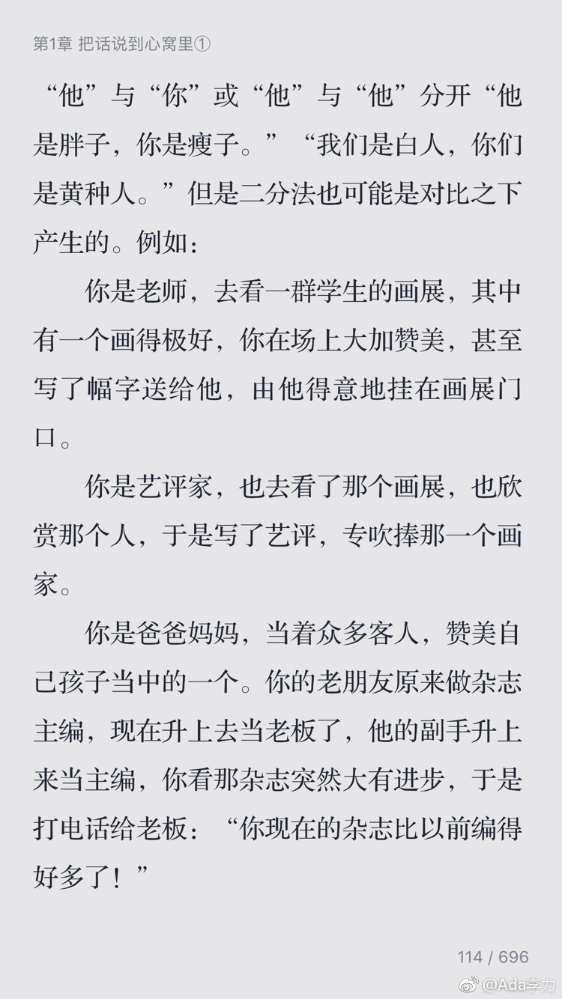

#读书#以前看刘墉的书，总觉得他的鸡汤透着世故。今天偶翻，发现是他的观点很符合中庸之道而已，比如截图中的表演人，不表扬某个出色的人，原因是怕得罪其余的人。
这类中庸之道用在企业里，才会死定了。不去激励奖励优异人才，是为了照顾平庸者的自尊心？怎么想，这做法都是蛮怪异的。
大概说话方式可以分成两种场合：生活场景里，中庸之道可以多些；商业环境中，以利益为导向。混在一起就不好玩了。
我还是更喜欢商业环境。
这类中庸之道用在企业里，才会死定了。不去激励奖励优异人才，是为了照顾平庸者的自尊心？怎么想，这做法都是蛮怪异的。
大概说话方式可以分成两种场合：生活场景里，中庸之道可以多些；商业环境中，以利益为导向。混在一起就不好玩了。
我还是更喜欢商业环境。
- 